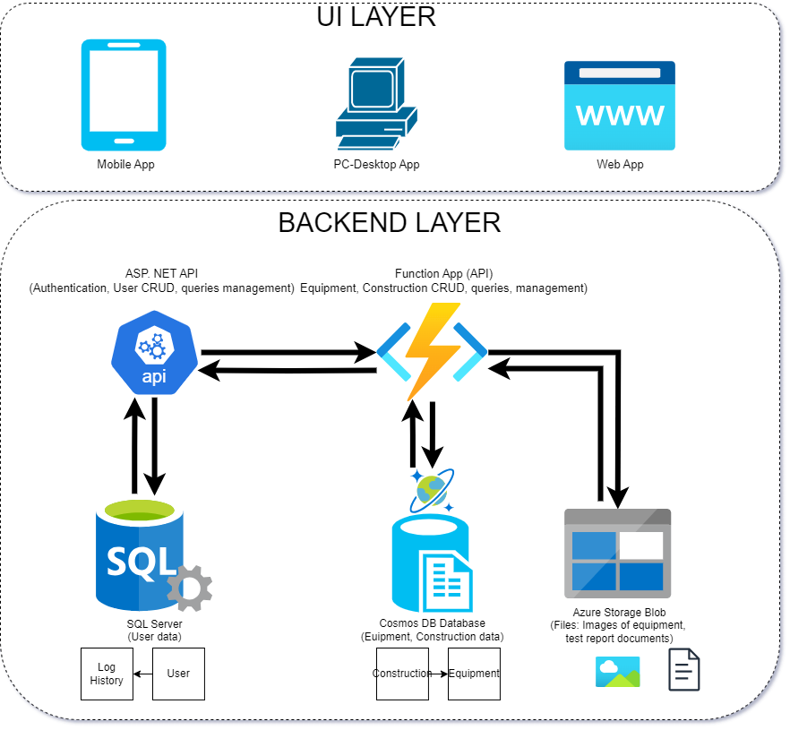

Electrical Testing Digital Transformation — Can Tho Power (System Overview)
End-to-end digital transformation platform for the electrical testing process at Can Tho Power Company — including backend APIs, desktop application, mobile app, and web portal built on Azure Cloud.
Over Project
This is an overall architecture view of a large system composed of multiple connected applications. The following projects describe each application in more detail.

RESTful API Backend – Can Tho Power
Serverless backend (Azure Functions) for electrical testing at Can Tho Power: constructions, equipment, tickets, file storage, document signing, SMS.
View project →
Electrical Equipment Management Desktop
Windows desktop app for managing constructions, equipment, test data and exporting Word/Excel reports connected to the backend.
View project →
Electrical Testing Mobile App
Xamarin.Forms mobile app for field technicians to handle tickets, constructions, equipment, measurements and photos.
View project →
Electrical Testing Web Portal
ASP.NET MVC web portal for office staff to review data, manage tickets, and export documents, integrated with the same backend.
View project →System Architecture Overview
The system follows a multi-layered, cloud-native architecture. Internal authentication is handled by ASP.NET API and SQL Server, while domain data such as constructions, tickets, and equipment are processed through Azure Function Apps and stored in Cosmos DB. All applications (web, mobile, desktop) communicate with the backend using secure RESTful APIs. Files, images, and digital documents are stored in Azure Blob Storage, and SMS notifications are sent via Viettel AMS services.
This architecture allows the platform to scale with growing data volume, while keeping core business logic centralized and reusable across multiple client applications.

Figure: High-level architecture diagram of the Electrical Testing Digital Transformation system (Can Tho Power).